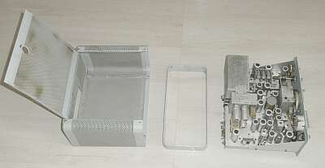 |
本体をケースから取り出すと、こんな風になります
トリムリングがあって・・・collinsに似通っています |
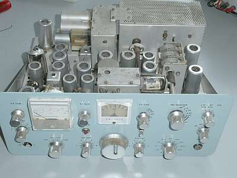 |
フロント側から見たシャーシ上面です
MICジャックは、オリジナルのDIN型ジャックを手配中
|
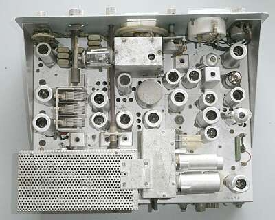 |
シャーシ上面です
ファイナル部の右横に取り付いているＢＯＸは、ＶＯＸとマーカーが組み込まれています（ＶＯＸユニット）
見えているＶＣは、ドライブ／プリセレクタ
中央のデカい円柱が、メカニカル・フィルタ
ＶＦＯの発振管は、横向きに取り付いています |
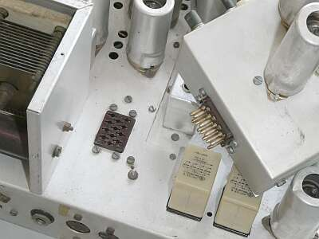 |
ＶＯＸ、マーカーユニットは、このようにコネクタで接続されています
最後は、終段シールドカバー部で、固定します
|
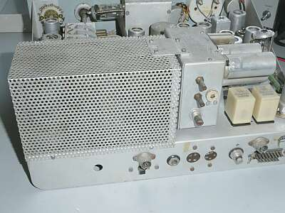 |
ＶＯＸ調整、あるいはマーカーの校正は背面から行うことができます |
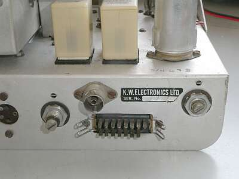 |
厄介な電源コネクタ形状
プラグの入手はあきらめて、端子に直接はんだ付けで別のコネクタに短いケーブルで接続し、そこに給電することを考えましょう
ＲＦコネクタも？？？
調べると、Belling-Lee L734/Pがあれば良さそう
UKでは、F型接栓への変換コネクタなどあるようで、それなりに普及していそうですが、私の身の回りでは見かけない・・・
一般的なものに入れ替えかなぁ |
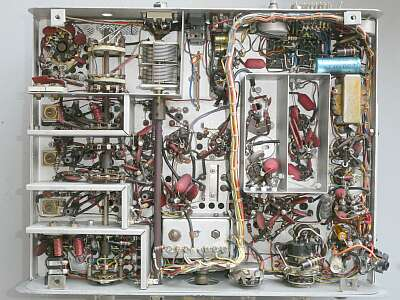 |
シャーシ裏面です
見えているVCは、ファイナル・ロードVC
|
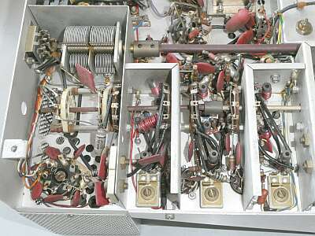 |
シャーシ裏面、ＲＦ部です
ファイナルは1本ですから、占めるスペースも小さい
段間は、きっちりシールドされ、シャフト類は、ベークライト製で、高周波的に絶縁してあります |
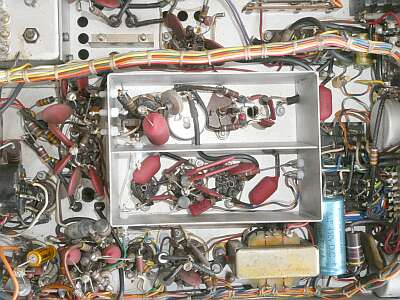 |
シャーシ裏、もう一つのシールドされた場所です
平衡変調部、キャリア発振部です |
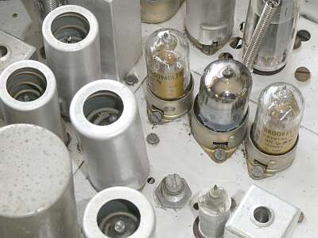 |
上写真のシャーシ上面の様子です
中央がキャリア発振を担う １２ＡＴ７
その両横は、一見真空管に見えますが、クリスタルです
いずれもシールドケースを取り外して写しています
真空管の数が多い・・・見た目の中にクリスタルも含まれます
左手前に、国際電気ＭＦ-４５５-１０ＣＫの頭が見えます
|
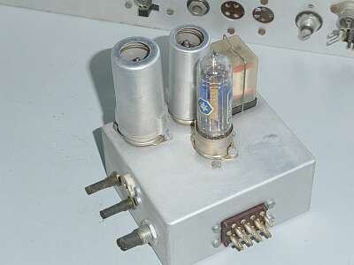 |
VOXユニットに内臓されるマーカー
シールドケースを外して写しているのは、１００ＫＨｚクリスタルです
こちらも、一見真空管に見えますね |
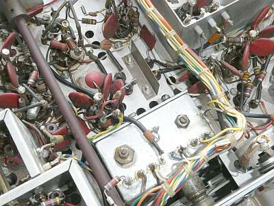 |
真ん中に立っているＬ型金具が、メカニカル・フィルターの中央に立つシールド板です
国際メカフィルお馴染みの？緩衝材ベタベタ問題が生じていれば、洗浄で復帰しないとなると、分解してセラミックフィルタを組み入れるという改造が必要になりそうです
手前は、VFOの底部 |
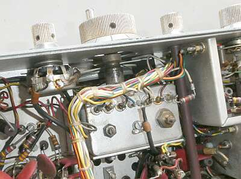 |
メインダイヤル
ＶＦＯ駆動は糸掛けで、フィーリングはスムーズです
メイン・ダイヤル７回転で、おおよそ１００ＫＨｚ・・・１回転当たり１５ＫＨｚ程度の展開です
仕様上は、ダイヤル読み取り精度は、２ＫＨｚ以内とあります |
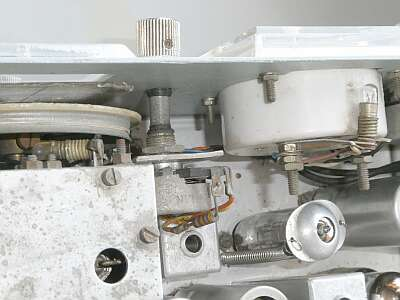 |
無線機では珍しく、照明には E5 のランプが使われています（２個）
笠をかぶっている球は、ＯＡ２定電圧放電管です |
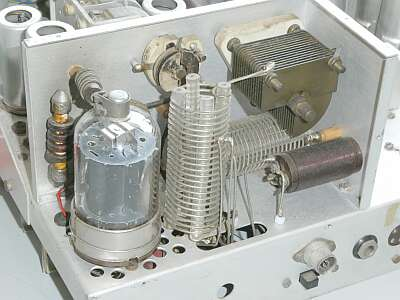 |
終段部
BRIMAR製 ６１４６ シングルです
１６０ｍバンドにも対応ですので、タンクコイルは２分割で使ってあります
使用されている真空管ですが、イギリス・メーカーのものばかり
具体的には、BRIMAR製、Mullard製、Zaerix製がほとんどです |
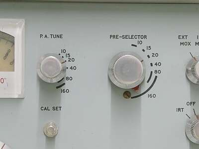 |
左回りに、バンドが高いほうに動く・・・
日頃のイメージとは異なって、戸惑います
余談ですが、
Hallicrafters ＦＰＭ-３００ も同様です |